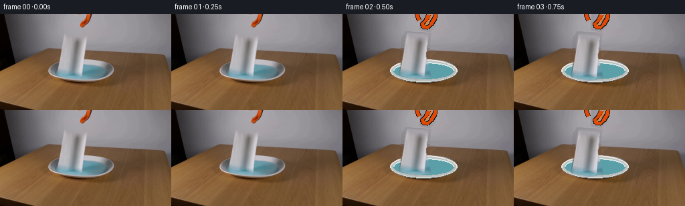
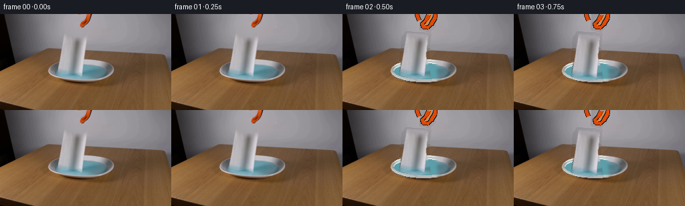
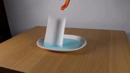
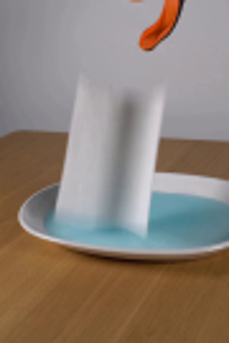
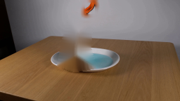
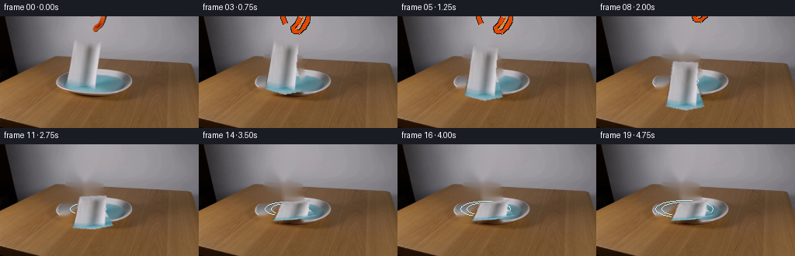
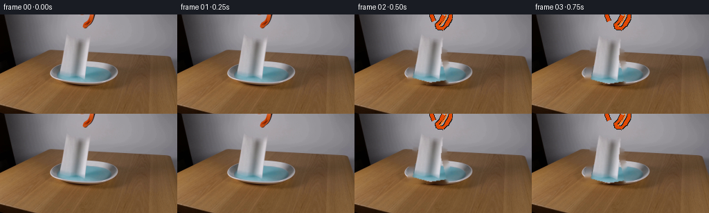
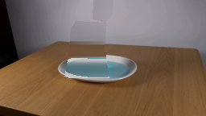
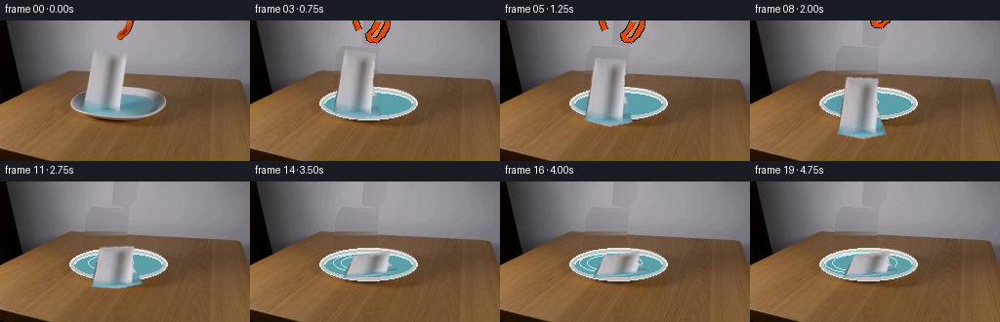
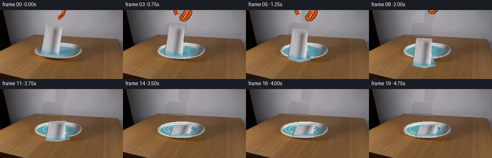

CODING AGENTS AS PIXEL WORLD MODELS
traex/GPT-5.6-Sol · 0129
点击播放 · 原生 RGB 像素
逐轮保存的候选
回放视频、检查图与代码变化。
每份候选均可单独播放。实际图片检查记录在下方工具轨迹中。
候选 01播放与检查图
点击播放 · 原生 RGB 像素

展开代码变化
--- 上一保存版本
+++ 本次保存版本
@@ -0,0 +1,107 @@
+from pathlib import Path
+import cv2
+import numpy as np
+from PIL import Image, ImageDraw, ImageFilter
+from artifact_io import save
+
+ROOT = Path(__file__).resolve().parent
+W,H = 256,144
+src = np.asarray(Image.open(ROOT/'first_frame.png').convert('RGB'))
+
+# Recover the locked-off set beneath the moving towel and grabber. The exact first
+# photographed frame is retained separately; this plate is only revealed after motion.
+bgr=cv2.cvtColor(src,cv2.COLOR_RGB2BGR)
+mask=np.zeros((H,W),np.uint8)
+cv2.fillPoly(mask,[np.array([[94,27],[132,29],[130,57],[135,88],[131,98],[79,97],[84,70],[89,38]])],255)
+cv2.fillPoly(mask,[np.array([[117,0],[139,0],[137,17],[130,27],[116,22]])],255)
+mask=cv2.dilate(mask,np.ones((7,7),np.uint8))
+plate=cv2.cvtColor(cv2.inpaint(bgr,mask,7,cv2.INPAINT_TELEA),cv2.COLOR_BGR2RGB)
+# Restore the liquid/dish over inpaint artifacts, using mirrored clean liquid samples.
+plate[76:94,83:132] = np.flip(src[76:94,113:162],axis=1)
+# Softly blend the repaired patch borders.
+pm=np.zeros((H,W),np.uint8); pm[72:98,77:137]=255
+pm=cv2.GaussianBlur(pm,(11,11),0).astype(np.float32)[...,None]/255
+plate=(plate* (1-pm) + cv2.cvtColor(cv2.inpaint(bgr,cv2.dilate(mask,np.ones((3,3),np.uint8)),5,cv2.INPAINT_NS),cv2.COLOR_BGR2RGB)*pm).astype(np.uint8)
+
+# Extract initial towel appearance and alpha from its pale chroma/region.
+y,x=np.mgrid[:H,:W]
+roi=(x>=82)&(x<=134)&(y>=27)&(y<=99)
+# Its silhouette in the source; polygon preserves recognizable paper edges.
+poly=np.array([[96,28],[127,31],[124,62],[132,94],[109,98],[84,91],[90,60]],np.int32)
+tmask=np.zeros((H,W),np.uint8); cv2.fillPoly(tmask,[poly],255)
+tmask=cv2.GaussianBlur(tmask,(3,3),.55)
+rgba=np.dstack([src,tmask])
+towel0=Image.fromarray(rgba).crop((78,23,139,104))
+
+# small paper-texture source, deterministic
+rng=np.random.default_rng(129)
+
+def towel_layer(frame):
+ # Release at 0.5 s, fall, bend on impact, then collapse/soak in the blue liquid.
+ if frame<=2:
+ p=0.0
+ else:
+ p=min(1,(frame-2)/12)
+ # physically accelerating fall until contact
+ if p<.42:
+ q=p/.42; yy=23 + 26*q*q; xx=78+2*q; angle=2*q
+ sx,sy=1.0,1.0
+ else:
+ q=(p-.42)/.58; yy=49+18*q; xx=80+5*q
+ angle=2+6*q
+ sx=1.0+.17*q; sy=1.0-.66*q
+ tw=towel0.resize((max(2,int(61*sx)),max(2,int(81*sy))),Image.Resampling.BICUBIC)
+ if angle: tw=tw.rotate(angle,Image.Resampling.BICUBIC,expand=True)
+ lay=Image.new('RGBA',(W,H)); lay.alpha_composite(tw,(int(xx),int(yy)))
+ return lay,p
+
+def draw_grabber(frame):
+ # Two orange rubber jaws separate, then tool withdraws upward.
+ if frame<2: openq=0; rise=0
+ else:
+ openq=min(1,(frame-2)/3)
+ rise=max(0,(frame-5)*5.0)
+ ov=Image.new('RGBA',(W,H),(0,0,0,0)); d=ImageDraw.Draw(ov)
+ # right jaw (the visible jaw from the photograph), receding upward-right
+ dx=7*openq; dy=-rise
+ pts=[(126+dx,-8+dy),(139+dx,-5+dy),(138+dx,5+dy),(132+dx,15+dy),(127+dx,20+dy),(120+dx,19+dy),(119+dx,14+dy),(125+dx,8+dy),(128+dx,1+dy)]
+ d.line(pts,fill=(28,27,25,255),width=7,joint='curve')
+ d.line(pts,fill=(226,73,4,255),width=5,joint='curve')
+ d.line([(128+dx,-5+dy),(132+dx,2+dy),(127+dx,11+dy),(122+dx,17+dy)],fill=(255,118,12,210),width=2)
+ # opposing jaw is initially largely outside frame; opening makes a hint visible left
+ if frame>=2:
+ lx=-7*openq
+ p2=[(112+lx,-8+dy),(111+lx,1+dy),(114+lx,9+dy)]
+ d.line(p2,fill=(30,28,25,255),width=7)
+ d.line(p2,fill=(224,70,4,255),width=5)
+ return ov
+
+frames=[]
+for i in range(20):
+ if i==0:
+ frames.append(src.copy()); continue
+ # Cross from photograph to clean plate only inside original moving-object regions.
+ base=Image.fromarray(plate.copy()).convert('RGBA')
+ # very subtle liquid ripples after contact
+ if i>=7:
+ dd=ImageDraw.Draw(base,'RGBA'); r=(i-7)*1.7
+ for k in range(2):
+ box=(105-r-k*8,79-r*.22-k*2,122+r+k*8,88+r*.22+k*2)
+ dd.ellipse(box,outline=(190,239,242,max(0,55-i*2)),width=1)
+ tw,p=towel_layer(i)
+ # soft moving shadow under falling towel
+ if i>=3 and i<11:
+ sh=Image.new('RGBA',(W,H)); sd=ImageDraw.Draw(sh)
+ rad=10+int(p*13); sd.ellipse((107-rad,84-rad//4,107+rad,88+rad//4),fill=(29,39,35,45))
+ sh=sh.filter(ImageFilter.GaussianBlur(5)); base=Image.alpha_composite(base,sh)
+ base=Image.alpha_composite(base,tw)
+ base=Image.alpha_composite(base,draw_grabber(i))
+ arr=np.asarray(base.convert('RGB'))
+ # Frame 1 is deliberately almost identical, preserving smooth real-time continuity.
+ if i==1:
+ arr=src.copy()
+ frames.append(arr)
+
+frames=np.stack(frames).astype(np.uint8)
+assert np.array_equal(frames[0],src)
+save(frames,ROOT)
候选 02播放与检查图
点击播放 · 原生 RGB 像素


展开代码变化
--- 上一保存版本
+++ 本次保存版本
@@ -8,20 +8,29 @@
W,H = 256,144
src = np.asarray(Image.open(ROOT/'first_frame.png').convert('RGB'))
-# Recover the locked-off set beneath the moving towel and grabber. The exact first
-# photographed frame is retained separately; this plate is only revealed after motion.
-bgr=cv2.cvtColor(src,cv2.COLOR_RGB2BGR)
+# Recover the locked-off set beneath the moving towel and grabber by analytic
+# reconstruction of the wall and the dish's concentric ellipses.
+plate=src.copy()
mask=np.zeros((H,W),np.uint8)
-cv2.fillPoly(mask,[np.array([[94,27],[132,29],[130,57],[135,88],[131,98],[79,97],[84,70],[89,38]])],255)
-cv2.fillPoly(mask,[np.array([[117,0],[139,0],[137,17],[130,27],[116,22]])],255)
-mask=cv2.dilate(mask,np.ones((7,7),np.uint8))
-plate=cv2.cvtColor(cv2.inpaint(bgr,mask,7,cv2.INPAINT_TELEA),cv2.COLOR_BGR2RGB)
-# Restore the liquid/dish over inpaint artifacts, using mirrored clean liquid samples.
-plate[76:94,83:132] = np.flip(src[76:94,113:162],axis=1)
-# Softly blend the repaired patch borders.
-pm=np.zeros((H,W),np.uint8); pm[72:98,77:137]=255
-pm=cv2.GaussianBlur(pm,(11,11),0).astype(np.float32)[...,None]/255
-plate=(plate* (1-pm) + cv2.cvtColor(cv2.inpaint(bgr,cv2.dilate(mask,np.ones((3,3),np.uint8)),5,cv2.INPAINT_NS),cv2.COLOR_BGR2RGB)*pm).astype(np.uint8)
+cv2.fillPoly(mask,[np.array([[94,26],[132,28],[129,58],[135,96],[80,96],[85,68],[88,35]])],255)
+cv2.fillPoly(mask,[np.array([[116,0],[140,0],[139,18],[130,27],[115,23]])],255)
+# locally interpolated wall/wood first
+for yy in range(H):
+ for xx in np.flatnonzero(mask[yy]):
+ l,r=(75,151) if yy<52 else ((72,151) if yy<72 else (65,177))
+ t=np.clip((xx-l)/(r-l),0,1)
+ plate[yy,xx]=src[yy,l]*(1-t)+src[yy,r]*t
+# reconstruct obscured ceramic and cyan liquid with feathered ellipse shapes
+P=Image.fromarray(plate).convert('RGBA')
+d=ImageDraw.Draw(P,'RGBA')
+d.ellipse((71,68,171,102),fill=(188,190,187,255),outline=(231,235,232,255),width=2)
+d.ellipse((76,72,166,97),fill=(91,159,168,255))
+# translucent surface highlight and rear/fore rim
+d.arc((76,72,166,97),180,360,fill=(213,231,230,180),width=2)
+d.arc((71,68,171,102),5,175,fill=(219,224,222,220),width=2)
+d.arc((71,68,171,102),5,175,fill=(110,116,115,120),width=1)
+d.arc((71,68,171,102),180,355,fill=(229,230,225,255),width=2)
+plate=np.asarray(P.convert('RGB'))
# Extract initial towel appearance and alpha from its pale chroma/region.
y,x=np.mgrid[:H,:W]
候选 03播放与检查图
点击播放 · 原生 RGB 像素


展开代码变化
--- 上一保存版本
+++ 本次保存版本
@@ -30,7 +30,12 @@
d.arc((71,68,171,102),5,175,fill=(219,224,222,220),width=2)
d.arc((71,68,171,102),5,175,fill=(110,116,115,120),width=1)
d.arc((71,68,171,102),180,355,fill=(229,230,225,255),width=2)
-plate=np.asarray(P.convert('RGB'))
+analytic=np.asarray(P.convert('RGB'))
+# Feather the reconstruction only through a generous removal silhouette, retaining
+# the photographed dish and set everywhere else.
+fm=cv2.dilate(mask,np.ones((13,13),np.uint8))
+fa=cv2.GaussianBlur(fm,(13,13),0).astype(np.float32)[...,None]/255.0
+plate=np.clip(analytic*fa+src*(1-fa),0,255).astype(np.uint8)
# Extract initial towel appearance and alpha from its pale chroma/region.
y,x=np.mgrid[:H,:W]
可观测工具轨迹
实际执行的命令与返回图片。
命令 1exit 0
/bin/bash -lc "cat prompt.txt && printf '\\n---RULES---\\n' && cat GENERATION_RULES.md"
命令 2exit 1
/bin/bash -lc "find . -maxdepth 2 -type f -printf '%P\\n' | sort && printf '\\n--- tools ---\\n' && command -v ffmpeg && command -v python3 && python3 - <<'PY' import importlib.util for x in ['cv2','PIL','numpy','imageio','scipy']: print(x, bool(importlib.util.find_spec(x))) PY"
命令 3exit 0
/bin/bash -lc "cat artifact_io.py; python3 - <<'PY'
from PIL import Image
im=Image.open('first_frame.png'); print(im.mode,im.size)
PY"命令 4exit 0
/bin/bash -lc "python3 - <<'PY' import importlib.util for x in ['cv2','PIL','numpy','imageio','scipy']: print(x, bool(importlib.util.find_spec(x))) PY command -v ffmpeg || true"
命令 5exit 0
/bin/bash -lc "python3 - <<'PY'
from PIL import Image
im=Image.open('first_frame.png')
im.crop((65,0,155,135)).resize((450,675)).save('.tmp/crop.png')
PY"命令 6exit 0
/bin/bash -lc "cat > .tmp/test_bg.py <<'PY'
import cv2, numpy as np
im=cv2.imread('first_frame.png')
mask=np.zeros(im.shape[:2],np.uint8)
cv2.fillPoly(mask,[np.array([[98,29],[129,33],[125,68],[133,94],[107,99],[84,91],[90,63]])],255)
cv2.rectangle(mask,(117,0),(138,23),255)
mask=cv2.dilate(mask,np.ones((7,7),np.uint8))
out=cv2.inpaint(im,mask,7,cv2.INPAINT_TELEA)
cv2.imwrite('.tmp/bg.png',out)
PY
python3 .tmp/test_bg.py"命令 7exit 0
/bin/bash -lc "cat > generate.py <<'PY'
from pathlib import Path
import cv2
import numpy as np
from PIL import Image, ImageDraw, ImageFilter
from artifact_io import save
ROOT = Path(__file__).resolve().parent
W,H = 256,144
src = np.asarray(Image.open(ROOT/'first_frame.png').convert('RGB'))
# Recover the locked-off set beneath the moving towel and grabber. The exact first
# photographed frame is retained separately; this plate is only revealed after motion.
bgr=cv2.cvtColor(src,cv2.COLOR_RGB2BGR)
mask=np.zeros((H,W),np.uint8)
cv2.fillPoly(mask,[np.array([[94,27],[132,29],[130,57],[135,88],[131,98],[79,97],[84,70],[89,38]])],255)
cv2.fillPoly(mask,[np.array([[117,0],[139,0],[137,17],[130,27],[116,22]])],255)
mask=cv2.dilate(mask,np.ones((7,7),np.uint8))
plate=cv2.cvtColor(cv2.inpaint(bgr,mask,7,cv2.INPAINT_TELEA),cv2.COLOR_BGR2RGB)
# Restore the liquid/dish over inpaint artifacts, using mirrored clean liquid samples.
plate[76:94,83:132] = np.flip(src[76:94,113:162],axis=1)
# Softly blend the repaired patch borders.
pm=np.zeros((H,W),np.uint8); pm[72:98,77:137]=255
pm=cv2.GaussianBlur(pm,(11,11),0).astype(np.float32)[...,None]/255
plate=(plate* (1-pm) + cv2.cvtColor(cv2.inpaint(bgr,cv2.dilate(mask,np.ones((3,3),np.uint8)),5,cv2.INPAINT_NS),cv2.COLOR_BGR2RGB)*pm).astype(np.uint8)
# Extract initial towel appearance and alpha from its pale chroma/region.
y,x=np.mgrid[:H,:W]
roi=(x>=82)&(x<=134)&(y>=27)&(y<=99)
# Its silhouette in the source; polygon preserves recognizable paper edges.
poly=np.array([[96,28],[127,31],[124,62],[132,94],[109,98],[84,91],[90,60]],np.int32)
tmask=np.zeros((H,W),np.uint8); cv2.fillPoly(tmask,[poly],255)
tmask=cv2.GaussianBlur(tmask,(3,3),.55)
rgba=np.dstack([src,tmask])
towel0=Image.fromarray(rgba).crop((78,23,139,104))
# small paper-texture source, deterministic
rng=np.random.default_rng(129)
def towel_layer(frame):
# Release at 0.5 s, fall, bend on impact, then collapse/soak in the blue liquid.
if frame<=2:
p=0.0
else:
p=min(1,(frame-2)/12)
# physically accelerating fall until contact
if p<.42:
q=p/.42; yy=23 + 26*q*q; xx=78+2*q; angle=2*q
sx,sy=1.0,1.0
else:
q=(p-.42)/.58; yy=49+18*q; xx=80+5*q
angle=2+6*q
sx=1.0+.17*q; sy=1.0-.66*q
tw=towel0.resize((max(2,int(61*sx)),max(2,int(81*sy))),Image.Resampling.BICUBIC)
if angle: tw=tw.rotate(angle,Image.Resampling.BICUBIC,expand=True)
lay=Image.new('RGBA',(W,H)); lay.alpha_composite(tw,(int(xx),int(yy)))
return lay,p
def draw_grabber(frame):
# Two orange rubber jaws separate, then tool withdraws upward.
if frame<2: openq=0; rise=0
else:
openq=min(1,(frame-2)/3)
rise=max(0,(frame-5)*5.0)
ov=Image.new('RGBA',(W,H),(0,0,0,0)); d=ImageDraw.Draw(ov)
# right jaw (the visible jaw from the photograph), receding upward-right
dx=7*openq; dy=-rise
pts=[(126+dx,-8+dy),(139+dx,-5+dy),(138+dx,5+dy),(132+dx,15+dy),(127+dx,20+dy),(120+dx,19+dy),(119+dx,14+dy),(125+dx,8+dy),(128+dx,1+dy)]
d.line(pts,fill=(28,27,25,255),width=7,joint='curve')
d.line(pts,fill=(226,73,4,255),width=5,joint='curve')
d.line([(128+dx,-5+dy),(132+dx,2+dy),(127+dx,11+dy),(122+dx,17+dy)],fill=(255,118,12,210),width=2)
# opposing jaw is initially largely outside frame; opening makes a hint visible left
if frame>=2:
lx=-7*openq
p2=[(112+lx,-8+dy),(111+lx,1+dy),(114+lx,9+dy)]
d.line(p2,fill=(30,28,25,255),width=7)
d.line(p2,fill=(224,70,4,255),width=5)
return ov
frames=[]
for i in range(20):
if i==0:
frames.append(src.copy()); continue
# Cross from photograph to clean plate only inside original moving-object regions.
base=Image.fromarray(plate.copy()).convert('RGBA')
# very subtle liquid ripples after contact
if i>=7:
dd=ImageDraw.Draw(base,'RGBA'); r=(i-7)*1.7
for k in range(2):
box=(105-r-k*8,79-r*.22-k*2,122+r+k*8,88+r*.22+k*2)
dd.ellipse(box,outline=(190,239,242,max(0,55-i*2)),width=1)
tw,p=towel_layer(i)
# soft moving shadow under falling towel
if i>=3 and i<11:
sh=Image.new('RGBA',(W,H)); sd=ImageDraw.Draw(sh)
rad=10+int(p*13); sd.ellipse((107-rad,84-rad//4,107+rad,88+rad//4),fill=(29,39,35,45))
sh=sh.filter(ImageFilter.GaussianBlur(5)); base=Image.alpha_composite(base,sh)
base=Image.alpha_composite(base,tw)
base=Image.alpha_composite(base,draw_grabber(i))
arr=np.asarray(base.convert('RGB'))
# Frame 1 is deliberately almost identical, preserving smooth real-time continuity.
if i==1:
arr=src.copy()
frames.append(arr)
frames=np.stack(frames).astype(np.uint8)
assert np.array_equal(frames[0],src)
save(frames,ROOT)
PY
python3 generate.py"命令 8exit 0
/bin/bash -lc "cat > .tmp/reconstruct.py <<'PY'
from PIL import Image
import numpy as np, cv2
src=np.asarray(Image.open('first_frame.png').convert('RGB')); out=src.copy(); H,W=src.shape[:2]
# object removal silhouette
m=np.zeros((H,W),np.uint8); cv2.fillPoly(m,[np.array([[94,26],[132,28],[129,58],[135,96],[80,96],[85,68],[88,35]])],255); cv2.fillPoly(m,[np.array([[116,0],[140,0],[139,18],[130,27],[115,23]])],255)
for y in range(H):
for x in np.flatnonzero(m[y]):
if y<52:
l,r=75,151; t=(x-l)/(r-l); out[y,x]=src[y,l]*(1-t)+src[y,r]*t
elif y<72:
l,r=72,151;t=(x-l)/(r-l);out[y,x]=src[y,l]*(1-t)+src[y,r]*t
else:
# layered ellipses
io=((x-121)/43)**2+((y-83.5)/12)**2
oo=((x-121)/50)**2+((y-84.5)/17)**2
if io<=1:
# liquid right sample range
yy=int(y); xs=[]
for xx in range(136,164):
if ((xx-121)/43)**2+((yy-83.5)/12)**2 <=1: xs.append(xx)
col=np.mean(src[yy,xs],axis=0) if xs else [83,156,165]
# slight horizontal lighting gradient
out[y,x]=np.clip(col+(x-121)*.12,0,255)
elif oo<=1:
# pale ceramic, gradient with vertical position
if y<84: col=np.array([174,183,182])+(84-y)*2.2
else: col=np.array([181,181,176])+(y-84)*1.7
out[y,x]=np.clip(col,0,255)
else:
l,r=65,177;t=(x-l)/(r-l);out[y,x]=src[y,l]*(1-t)+src[y,r]*t
Image.fromarray(out).save('.tmp/plate2.png')
PY
python3 .tmp/reconstruct.py"命令 9exit 0
/bin/bash -lc "python3 - <<'PY'
from pathlib import Path
p=Path('generate.py')
s=p.read_text()
start=s.index(\"# Recover the locked-off set\")
end=s.index(\"# Extract initial towel\")
new='''# Recover the locked-off set beneath the moving towel and grabber by analytic\\n# reconstruction of the wall and the dish's concentric ellipses.\\nplate=src.copy()\\nmask=np.zeros((H,W),np.uint8)\\ncv2.fillPoly(mask,[np.array([[94,26],[132,28],[129,58],[135,96],[80,96],[85,68],[88,35]])],255)\\ncv2.fillPoly(mask,[np.array([[116,0],[140,0],[139,18],[130,27],[115,23]])],255)\\n# locally interpolated wall/wood first\\nfor yy in range(H):\\n for xx in np.flatnonzero(mask[yy]):\\n l,r=(75,151) if yy<52 else ((72,151) if yy<72 else (65,177))\\n t=np.clip((xx-l)/(r-l),0,1)\\n plate[yy,xx]=src[yy,l]*(1-t)+src[yy,r]*t\\n# reconstruct obscured ceramic and cyan liquid with feathered ellipse shapes\\nP=Image.fromarray(plate).convert('RGBA')\\nd=ImageDraw.Draw(P,'RGBA')\\nd.ellipse((71,68,171,102),fill=(188,190,187,255),outline=(231,235,232,255),width=2)\\nd.ellipse((76,72,166,97),fill=(91,159,168,255))\\n# translucent surface highlight and rear/fore rim\\nd.arc((76,72,166,97),180,360,fill=(213,231,230,180),width=2)\\nd.arc((71,68,171,102),5,175,fill=(219,224,222,220),width=2)\\nd.arc((71,68,171,102),5,175,fill=(110,116,115,120),width=1)\\nd.arc((71,68,171,102),180,355,fill=(229,230,225,255),width=2)\\nplate=np.asarray(P.convert('RGB'))\\n\\n'''
p.write_text(s[:start]+new+s[end:])
PY
python3 generate.py"命令 10exit 0
/bin/bash -lc "python3 - <<'PY'
p='generate.py'
s=open(p).read()
s=s.replace(\"plate=np.asarray(P.convert('RGB'))\\n\\n# Extract\", \"analytic=np.asarray(P.convert('RGB'))\\n# Feather the reconstruction only through a generous removal silhouette, retaining\\n# the photographed dish and set everywhere else.\\nfm=cv2.dilate(mask,np.ones((13,13),np.uint8))\\nfa=cv2.GaussianBlur(fm,(13,13),0).astype(np.float32)[...,None]/255.0\\nplate=np.clip(analytic*fa+src*(1-fa),0,255).astype(np.uint8)\\n\\n# Extract\")
open(p,'w').write(s)
PY
python3 generate.py"命令 11exit 0
/bin/bash -lc "python3 - <<'PY'
import numpy as np
from PIL import Image
z=np.load('pixels.npz')['pixels']
a=np.asarray(Image.open('first_frame.png').convert('RGB')).astype(np.uint32)
p=(a[:,:,0]<<16)|(a[:,:,1]<<8)|a[:,:,2]
print('pixels',z.shape,z.dtype,'frame0_exact',np.array_equal(z[:,:,0],p))
print('frames',len(list(__import__('pathlib').Path('frames').glob('*.png'))))
PY"视觉工具实际返回图片 1

视觉工具实际返回图片 2

视觉工具实际返回图片 3

视觉工具实际返回图片 4

视觉工具实际返回图片 5

视觉工具实际返回图片 6

视觉工具实际返回图片 7

视觉工具实际返回图片 8

保存候选 3 份；完成命令 11 次；可验证图片返回 8 张。原始 API 响应与完整日志保留在本地。